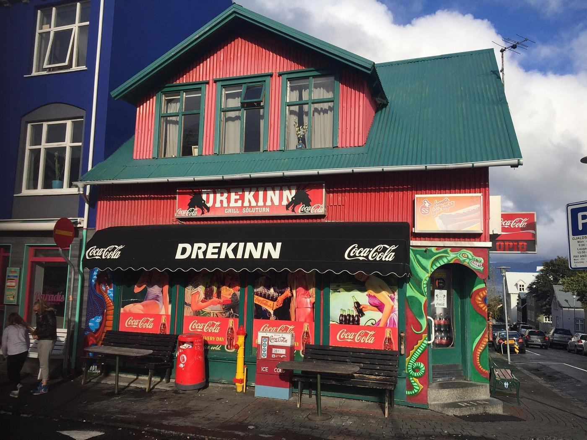

Á Njálsgötu og í Hafnarfirði
Hamborgarar, franskar og sjoppa við Hallgrímskirkju.
Sjoppa við Dalshraun í Hafnarfirði.

Frábær matur á góðu verði. Pítan með grænmetisbuffi var full af grænmeti og fylgdi risapoki af frönskum. Kom hratt, heitt og ferskt.
Tvöfaldi ostborgarinn var einn sá besti sem ég hef fengið í bænum. Strákurinn á grillinu var einstaklega vingjarnlegur.
Ostborgarinn kom á óvart: safaríkur, frábær sósa og ferskt brauð. Kryddið á frönskunum var svo gott að ég tók afganginn með mér heim til Bandaríkjanna.
Besti staðurinn sem ég fann í Reykjavík fyrir almennilegan skammt á sanngjörnu verði. Og maturinn er góður. Rétt neðan við Hallgrímskirkju.